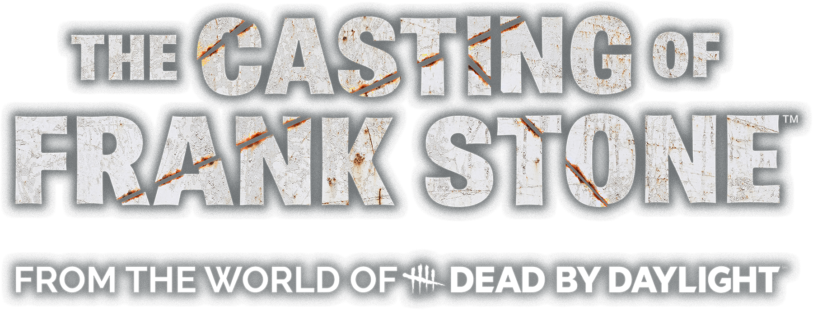

Guia de Platina Completo · PT-BR · Supermassive Games

Dead by Daylight Universe · 2024
Guia organizado em 3 runs com todos os 14 capítulos, 54 colecionáveis, troféus em português do Brasil e rastreador de perdíveis.
33Troféus
54Colecionáveis
3Runs mín.
30–40hEstimativa
224Ramos (CRF)
4/10Dificuldade
RUN 1 — PRINCIPAL
Todos Sobrevivem + Colecionáveis
Jogue do Cap. 1 ao 14 com foco em sobreviver com todos os personagens, coletar todos os 54 colecionáveis e obter a maioria dos troféus de escolha. Use dificuldade Observador.
Entidade DescontenteA FogueiraAprimoradorTodos os ColecionáveisArtista da Fuga OU Memento MoriFogo Amigo OU Fagocitose~15–20h
RUN 2 — MORTES
Assassino Impiedoso
Jogue do início ao fim tomando decisões que matam todos os 5 personagens principais. Madi, Jaime, Chris, Sam e Linda precisam morrer. Foque nas escolhas que levam a mortes em cada capítulo-chave.
Assassino ImpiedosoTodos os personagens morremMemento Mori ou Artista da Fuga (o que não fez)~10–12h
RUN 3 — SALA DE MONTAGEM
Limpeza via Cutting Room Floor
Use o Cutting Room Floor para acessar os 224 ramos narrativos, troféus mutuamente exclusivos não obtidos e colecionáveis perdidos. Você precisará jogar sequencialmente a partir do ponto de retorno até o final.
Onisciente (224 ramos)Troféus exclusivos restantesColecionáveis faltantesStan O Fragmentado~8–12h
NOTA SOBRE A SALA DE MONTAGEM: Diferente de outros jogos da Supermassive, o Cutting Room Floor do Frank Stone exige que você jogue todos os capítulos sequencialmente a partir do ponto de retorno. Não é possível pular para o capítulo final diretamente após mudar uma escolha. Planeje suas runs com isso em mente.
COMO MATAR CADA PERSONAGEM (RUN 2)
PERSONAGEM
COMO GARANTIR A MORTE
Jaime (1980)
🔪 JAIME - Cap. 5: NÃO pegar foguetes na Farmácia + confrontar Frank Stone para salvar Chris → ele é cortado ao meio Cap. 13: Na sequência do esgoto, falhar a câmera contra Frank Stone (Memento Mori / rota alternativa) → Jaime morre na perseguição.
Madi
🧠 MADI - Cap. 8: Falhar o QTE de apertar □ no puzzle Horologium → Madi é queimada viva Cap. 14:Se ir para o elevador com Linda → Madi é capturada para sacrifício. Se falhar QTEs na fuga → Madi é sacrificada pela Entidade
Chris
🧍 CHRIS - Cap. 10: Morte alternativa em rota de timeline (falha de progressão / evento específico). Cap. 13: Se Chris voltar para 1980 → Frank a derruba. Se Linda NÃO salvá-la com a câmera → Frank esmaga a cabeça dela. Cap. 14: Se tiver o espelho (Cap. 3) + escolher entrar no projetor → Chris é queimada instantaneamente
Sam
🧍 SAM - Cap. 13: No esgoto (1980), falhar em afastar Frank Stone → Sam é espancado até a morte. Cap. 14: Se tentar salvar Linda/Madi e falhar QTEs → Sam é sacrificado pela Entidade.
Linda
🧍♀️ LINDA - Falhar QTEs de fuga deCap. 13: Falhar minigame da câmera (última luta) → Frank esmaga a cabeça dela. Cap. 14: Ir para o elevador em vez de ajudar Madi → decapitada Ou falhar fuga após perseguição → pescoço quebrado.
Bonnie e Stan: Estes NPC não contam para o troféu "Assassino Impiedoso". As mortes contabilizadas são apenas dos 5 personagens jogáveis: Madi, Jaime, Chris, Sam e Linda.
INSTRUÇÃO GERAL: Jogue sempre em dificuldade Observador. Explore cada ambiente completamente antes de interagir com objetos que avançam a narrativa — esses objetos fecham áreas anteriores permanentemente. Verifique o menu de Colecionáveis ao fim de cada capítulo.
Todos Sobrevivem + Colecionáveis
Run 2 — Foco em Mortes: Falhe QTEs deliberadamente nos momentos-chave abaixo. Consulte a tabela "Como Matar Cada Personagem" na aba Visão Geral, procure fazer escolhas diferentes em conversas pra aumentar o leque de linhas de diálogo.
Run 3 — Cutting Room Floor: Acesse o CRF no menu principal após terminar o jogo. Para o troféu Onisciente, você deve desbloquear todos os 224 ramos. Use o mapa de ramificações dentro do CRF para identificar os ramos ainda bloqueados.
Explore como cada escolha dentro de um capítulo afeta o rumo da história de Sam e quais troféus
cada rota prepara, trava ou conquista — sem precisar alternar entre as outras abas. Comece pelo
capítulo "A Bocarra Ardente" (Prólogo); os demais capítulos no seletor
ainda estão sendo montados e aparecem marcados como 🔒 Em breve.
✓ Caps. 1 e 2 revisados e verificados (09/2026) contra fontes cruzadas: GameSpew,
TheGamer, Pro Game Guides, Sportskeeda, Neoseeker (walkthrough + troféus), Steam Guides
(ThePugHybrid 100% e mapa completo da Cutting Room Floor), PSNProfiles e TrueAchievements.
A versão anterior do Cap. 1 tinha 2 escolhas que não existem no jogo real — já corrigidas.
🎞️ Ramificação Cutting Room Floor
marca nós confirmados como uma das 224 ramificações que contam pro troféu
"Onisciente" (a platina exige desbloquear todas elas, não só bater o jogo
uma vez). Só uso esse selo quando pelo menos duas fontes confirmam que aquele ponto específico é
rastreado na Sala de Montagem — o resto da árvore mostra escolhas reais da história que talvez não
sejam contadas separadamente ali.
THE CASTING OF FRANK STONE — CAMINHOS
🏆 ROTEIRO DA PLATINA INTEGRADO
TENSÃO
50%🌑 SOMBRIO
CAPÍTULO
🔒 Em breve
100%
Nomes, ícones e descrições oficiais em Português do Brasil conforme a localização PT-BR do PlayStation, extraídos da lista oficial do Exophase. O "como obter" é elaborado por este guia com base no Steam Guide (ThePugHybrid) e checagens cruzadas. Troféus marcados com ⚠ são perdíveis ou mutuamente exclusivos.
ÍCONE
NOME PT-BR
COMO OBTER
RANK
STATUS
AVISO: Qualquer item desta lista, se perdido, só pode ser recuperado usando o Cutting Room Floor — o que exige jogar todos os capítulos subsequentes novamente. Marque cada item conforme for completando.
Rastreador de Perdíveis
Concluídos0 / 19
Lista com os 19 troféus perdíveis do jogo, em ordem de capítulo (do mais próximo ao mais distante), cruzada entre o Steam Guide (ThePugHybrid) e a lista oficial de troféus PT-BR do Exophase.
⚠ DIVERGÊNCIA ENTRE FONTES: este guia originalmente listava Stan, o Fragmentado no Cap. 8. O Steam Guide (ThePugHybrid) e vídeos de troféu no YouTube/Exophase indicam que ele ocorre no Cap. 10 (mesma decisão de mandar Chris de volta a 1980 ou não). A ordem acima usa Cap. 10 por ter duas fontes independentes confirmando; a seção de capítulos do guia não foi alterada nesta atualização.
4 PARES DE TROFÉUS MUTUAMENTE EXCLUSIVOS:
1. Dinheiro Fácil ↔ Desconto dos Cinco Dedos (Cap. 3 — suborno vs roubo)
2. Artista da Fuga ↔ Memento Mori (Cap. 13 — salvar vs matar Jaime)
3. Fogo Amigo ↔ Fagocitose (Cap. 14 — atirar em Madi vs deixar absorver)
4. Entidade Descontente ↔ Assassino Impiedoso (final — todos sobrevivem vs todos morrem)
Notas de Colecionáveis Perdíveis
Itens do guia original que afetam colecionáveis (não troféus) — mantidos aqui separados da lista de troféus acima.